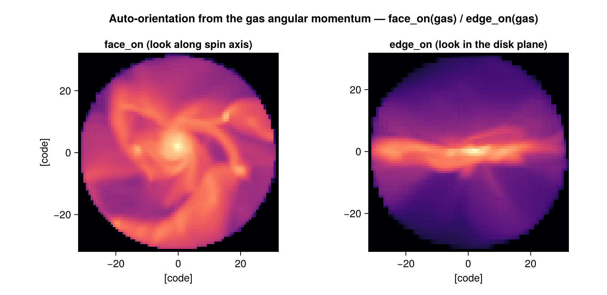
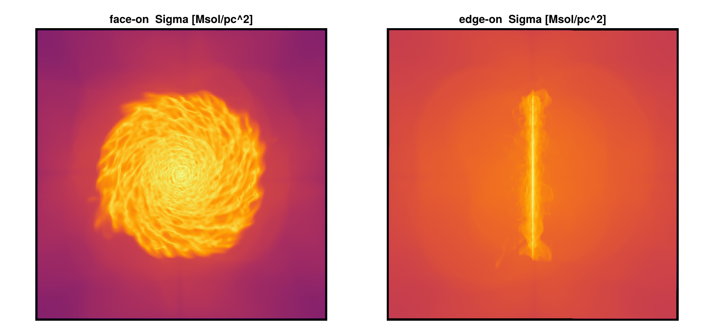

Auto-Frame: centering & orientation
This page is also an executable Jupyter notebook — open / download galaxyframe.ipynb. The notebooks run end-to-end and double as part of Mera's test suite.
"Find the centre, then rotate to face-on / edge-on" is a ritual every disk-galaxy analysis repeats by hand. center_of and face_on / edge_on do it from the data: the centre from the mass distribution, the orientation from the gas angular momentum. The result drops straight into projection.

This notebook runs on the mw_L10 disk-galaxy snapshot (output 300) — an isolated spiral, so the bare face_on(gas) call is correct. Each cell prints the real frame it computed.
# Example-data root. Point this at your own simulation folder, or set the
# MERA_EXAMPLES environment variable; every path below is built from it.
MERA_EXAMPLES = get(ENV, "MERA_EXAMPLES", "/Volumes/FASTStorage/Simulations/Mera-Tests");
using Mera
info = getinfo(300, joinpath(MERA_EXAMPLES, "RAMSES/mw_L10"))
gas = gethydro(info);
println("cells loaded : ", length(gas.data))*__ __ _______ ______ _______
| |_| | | _ | | _ |
| | ___| | || | |_| |
| | |___| |_||_| |
| | ___| __ | |
| ||_|| | |___| | | | _ |
|_| |_|_______|___| |_|__| |__|
Mera v1.8.0
[Mera]: 2026-08-03T11:52:25.491
Code: RAMSES
output [300] summary:
mtime: 2023-04-09T05:34:09
ctime: 2025-06-21T18:31:24.020
=======================================================
simulation time: 445.89 [Myr]
boxlen: 48.0 [kpc]
ncpu: 640
ndim: 3
cosmological: false
-------------------------------------------------------
amr: true
level(s): 6 - 10 --> cellsize(s): 750.0 [pc] - 46.88 [pc]
-------------------------------------------------------
hydro: true
hydro-variables: 7 --> (:rho, :vx, :vy, :vz, :p, :scalar_00, :scalar_01)
hydro-descriptor: (:density, :velocity_x, :velocity_y, :velocity_z, :pressure, :scalar_00, :scalar_01)
γ: 1.6667
-------------------------------------------------------
gravity: true
gravity-variables: (:epot, :ax, :ay, :az)
-------------------------------------------------------
particles: true
- Nstars: 5.445150e+05
particle-variables: 7 --> (:vx, :vy, :vz, :mass, :family, :tag, :birth)
particle-descriptor: (:position_x, :position_y, :position_z, :velocity_x, :velocity_y, :velocity_z, :mass, :identity, :levelp, :family, :tag, :birth_time)
-------------------------------------------------------
rt: false
clumps: false
-------------------------------------------------------
namelist-file: ("&COOLING_PARAMS", "&SF_PARAMS", "&AMR_PARAMS", "&BOUNDARY_PARAMS", "&OUTPUT_PARAMS", "&POISSON_PARAMS", "&RUN_PARAMS", "&FEEDBACK_PARAMS", "&HYDRO_PARAMS", "&INIT_PARAMS", "&REFINE_PARAMS")
-------------------------------------------------------
timer-file: true
compilation-file: false
makefile: true
patchfile: true
=======================================================
[Mera]: Get hydro data: 2026-08-03T11:52:28.149
Key vars=(:level, :cx, :cy, :cz)
Using var(s)=(1, 2, 3, 4, 5, 6, 7) = (:rho, :vx, :vy, :vz, :p, :scalar_00, :scalar_01)
domain:
xmin::xmax: 0.0 :: 1.0 ==> 0.0 [kpc] :: 48.0 [kpc]
ymin::ymax: 0.0 :: 1.0 ==> 0.0 [kpc] :: 48.0 [kpc]
zmin::zmax: 0.0 :: 1.0 ==> 0.0 [kpc] :: 48.0 [kpc]
📊 Processing Configuration:
Total CPU files available: 640
Files to be processed: 640
Compute threads: 4
GC threads: 4
✓ File processing complete! Combining results...
✓ Data combination complete!
Final data size: 28320979 cells, 7 variables
Creating Table from 28320979 cells with max 4 threads...
Threading: 4 threads for 11 columns
Max threads requested: 4
Available threads: 4
Using parallel processing with 4 threads
Creating IndexedTable with 11 columns...
✓ Table created in 42.044 seconds
Memory used for data table :2.321086215786636 GB
-------------------------------------------------------
cells loaded : 28320979Finding the centre
center_of returns [x, y, z]:
c_com = center_of(gas) # mass-weighted CoM (box fraction)
c_densest = center_of(gas, method=:densest) # densest hydro cell
c_kpc = center_of(gas, unit=:kpc) # CoM in physical units
println("center_of (:com, fraction) : ", round.(c_com, digits=5))
println("center_of (:densest) : ", round.(c_densest, digits=5))
println("center_of (:com, kpc) : ", round.(c_kpc, digits=4))center_of (:com, fraction) : [0.50001, 0.50046, 0.50044]
center_of (:densest) : [0.49658, 0.50244, 0.50146]
center_of (:com, kpc) : [24.0003, 24.022, 24.0212]For :standard the result is a box fraction (0–1) — the convention that projection, subregion and getvar(…; center=…) expect — so it feeds straight back into them.
Orienting: face-on and edge-on
face_on and edge_on compute the net angular momentum L about the centre and return a GalaxyFrame:
face_on→ line of sight along the spin axis (look down on the disk).edge_on→ line of sight in the disk plane, with the spin axis pointing up.
fr = face_on(gas)
println(fr) # GalaxyFrame pretty-print
println()
println("los : ", round.(fr.los, digits=4)) # camera looks along this
println("up : ", round.(fr.up, digits=4)) # camera up
println("center : ", round.(fr.center, digits=5), " [", fr.center_unit, "]")
println("angmom : ", round.(fr.angmom, sigdigits=4))GalaxyFrame:
center (standard) = [0.5, 0.5005, 0.5004]
los = [-0.0004, -0.0002, 1.0]
up = [-1.0, 0.0, -0.0004]
|angmom| = 160.2
los : [-0.0004, -0.0002, 1.0]
up : [-1.0, 0.0, -0.0004]
center : [0.50001, 0.50046, 0.50044] [standard]
angmom : [-0.06597, -0.03328, 160.2]eo = edge_on(gas)
println(eo)
println()
println("edge-on los : ", round.(eo.los, digits=4))
println("edge-on up : ", round.(eo.up, digits=4))
# face-on and edge-on lines of sight are orthogonal:
println("los_faceon · los_edgeon = ", round(sum(fr.los .* eo.los), digits=6))GalaxyFrame:
center (standard) = [0.5, 0.5005, 0.5004]
los = [-0.0, 1.0, 0.0002]
up = [-0.0004, -0.0002, 1.0]
|angmom| = 160.2
edge-on los : [-0.0, 1.0, 0.0002]
edge-on up : [-0.0004, -0.0002, 1.0]
los_faceon · los_edgeon = -0.0Why it works without subtracting the bulk velocity: angular momentum measured about the centre of mass cancels any net translation, because $\sum_i m_i \mathbf{r}_i = 0$ there. (The same cancellation removes the Hubble flow in cosmological runs, since $\mathbf{r} \times H\mathbf{r} = 0$.)
Drive a projection with the frame
Splat the frame's los/up/center into projection — face-on for morphology, edge-on for the rotating disk.
using CairoMakie
p_face = projection(gas, :sd, :Msol_pc2; los=fr.los, up=fr.up,
center=fr.center, range_unit=fr.center_unit)
p_edge = projection(gas, :sd, :Msol_pc2; los=eo.los, up=eo.up,
center=eo.center, range_unit=eo.center_unit)
println("face-on Sigma extrema : ", extrema(p_face.maps[:sd]))
println("edge-on Sigma extrema : ", extrema(p_edge.maps[:sd]))
fig = Figure(size=(900, 420))
ax1 = Axis(fig[1,1]; title="face-on Sigma [Msol/pc^2]", aspect=DataAspect()); hidedecorations!(ax1)
ax2 = Axis(fig[1,2]; title="edge-on Sigma [Msol/pc^2]", aspect=DataAspect()); hidedecorations!(ax2)
heatmap!(ax1, log10.(p_face.maps[:sd]'); colormap=:inferno)
heatmap!(ax2, log10.(p_edge.maps[:sd]'); colormap=:inferno)
fig[Mera]: 2026-08-03T11:53:58.646
center: [0.5000061, 0.5004579, 0.5004408] ==> [24.0 [kpc] :: 24.022 [kpc] :: 24.021 [kpc]]
domain:
xmin::xmax: 0.0 :: 1.0 ==> 0.0 [kpc] :: 48.0 [kpc]
ymin::ymax: 0.0 :: 1.0 ==> 0.0 [kpc] :: 48.0 [kpc]
zmin::zmax: 0.0 :: 1.0 ==> 0.0 [kpc] :: 48.0 [kpc]
Selected var(s)=(:sd,)
Weighting = :mass
Off-axis LOS = [-0.0004, -0.0002, 1.0] (binning=:overlap)
Effective resolution: 1024^2 → map size: 1038 x 1038
[Mera]: 2026-08-03T11:54:09.266
center: [0.5000061, 0.5004579, 0.5004408] ==> [24.0 [kpc] :: 24.022 [kpc] :: 24.021 [kpc]]
domain:
xmin::xmax: 0.0 :: 1.0 ==> 0.0 [kpc] :: 48.0 [kpc]
ymin::ymax: 0.0 :: 1.0 ==> 0.0 [kpc] :: 48.0 [kpc]
zmin::zmax: 0.0 :: 1.0 ==> 0.0 [kpc] :: 48.0 [kpc]
Selected var(s)=(:sd,)
Weighting = :mass
Off-axis LOS = [-0.0, 1.0, 0.0002] (binning=:overlap)
Effective resolution: 1024^2 → map size: 1038 x 1038
face-on Sigma extrema : (0.0, 200.81405317206742)
edge-on Sigma extrema : (0.0, 6539.3160386012305)
Several galaxies, mergers, cosmological boxes
face_on(gas) / center_of(gas) use the global CoM and the summed angular momentum. In a box with many galaxies that is meaningless — the CoM lands between them and unrelated spins cancel. Point the tool at the object with a seed center plus an aperture; it then re-centres on the local CoM inside that sphere and measures only that object's spin:
# the densest galaxy in the box (good first guess in a cosmological run)
fr = face_on(gas; center=:densest, aperture=30, range_unit=:kpc)
# a galaxy at a known/catalogued position (e.g. from a halo or clump finder)
fr = face_on(gas; center=[x, y, z], aperture=30, range_unit=:kpc)Equivalently, cut the object out first and frame that:
gal = subregion(gas, :sphere; center=[x,y,z], radius=30, range_unit=:kpc)
fr = face_on(gal)Because the spin is then taken about the local CoM, this is also the correct recipe for a merger progenitor and for any galaxy moving through a cosmological box. Choosing the aperture to enclose the disk (but not the neighbours) is the one judgement call.
mw_L10 is isolated, so here we just demonstrate the aperture form locks onto the disk.
fr_ap = face_on(gas; center=:densest, aperture=30, range_unit=:kpc)
println(fr_ap)
println("aperture-framed center [kpc] : ", round.(fr_ap.center, digits=4))GalaxyFrame:
center (kpc) = [24.0003, 24.022, 24.0212]
los = [-0.0004, -0.0002, 1.0]
up = [-1.0, 0.0, -0.0004]
|angmom| = 160.2
aperture-framed center [kpc] : [24.0003, 24.022, 24.0212]Options
| function | keyword | default | meaning |
|---|---|---|---|
center_of | method | :com | :com (centre of mass) or :densest (densest hydro cell) |
center_of | unit | :standard | output unit; :standard → box fraction, else physical |
center_of | mask | [false] | restrict to masked cells/particles |
face_on/edge_on | center | :com | :com, :densest, or an explicit [x,y,z] |
face_on/edge_on | aperture | nothing | sphere radius (in range_unit) to isolate one object |
face_on/edge_on | range_unit | :standard | unit of center/aperture/output centre |
Works on hydro and particle data (both carry mass and velocity → angular momentum).
Method and references
Aperture. The aperture keyword is a sphere radius (in range_unit) around the seed centre — the region within which the local centre and the spin axis are measured. The name is borrowed from aperture photometry: only data inside the sphere contributes, which is what isolates one object from its neighbours. aperture=nothing (the default) uses all the data, which is correct only for an already-isolated object.
Orientation. face_on / edge_on take the net, mass-weighted angular momentum
\[\mathbf{L} = \sum_i m_i\, \mathbf{r}_i \times \mathbf{v}_i\]
of the selected region about the centre, and use $\hat{\mathbf{L}}$ as the spin axis (the face-on line of sight); edge-on looks along a direction in the disc plane. This is the standard angular-momentum recipe for orienting disc galaxies.
Centring. :com is the mass-weighted centre of mass; :densest is the density peak. With a seed centre plus an aperture, the frame re-centres on the local CoM inside the sphere — one iteration of the shrinking-sphere centre commonly used for haloes.
Why no bulk-velocity subtraction. Angular momentum about the centre of mass separates into centre-of-mass and internal parts (König's theorem), so a net translation contributes nothing about the CoM. The Hubble flow $\mathbf{v} = H\mathbf{r}$ is parallel to $\mathbf{r}$, so $\mathbf{r} \times \mathbf{v} = 0$ — hence the recipe is also correct in cosmological runs.
These are standard techniques in galaxy-simulation analysis rather than any single source; the authoritative references for the ingredients:
- A. Pontzen, R. Roškar, G. Stinson, et al., pynbody: Astrophysics Simulation Analysis for Python (2013), Astrophysics Source Code Library, ascl:1305.002 —
faceon/sideonorientation by angular momentum. - M. J. Turk, B. D. Smith, J. S. Oishi, et al., "yt: A Multi-code Analysis Toolkit for Astrophysical Simulation Data", ApJS 192, 9 (2011).
- C. Power, J. F. Navarro, A. Jenkins, et al., "The inner structure of ΛCDM haloes — I. A numerical convergence study", MNRAS 338, 14 (2003) — iterative shrinking-sphere centre.
- V. Springel, N. Yoshida, S. D. M. White, "GADGET … and the SUBFIND algorithm", MNRAS 328, 726 (2001) — density-peak substructure centres.
- J. Binney & S. Tremaine, Galactic Dynamics, 2nd ed. (Princeton University Press, 2008) — angular momentum and disc dynamics.
- H. Goldstein, C. Poole, J. Safko, Classical Mechanics, 3rd ed. (Addison-Wesley, 2002) — König's theorem (decomposition of angular momentum about the CoM).
See also
projection— consumeslos/up/centerfor off-axis views.subregion— isolate one object before framing it.center_of_mass,bulk_velocity— the underlying reductions.- Off-axis projection — the projection machinery the frame drives.